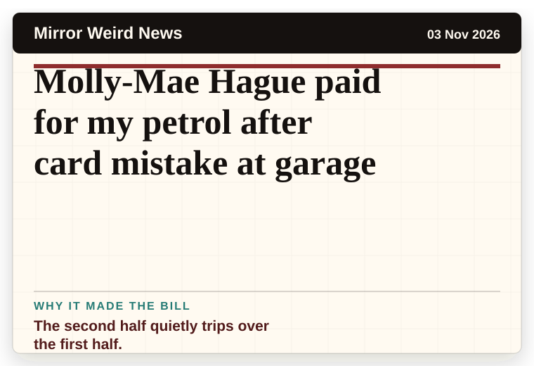
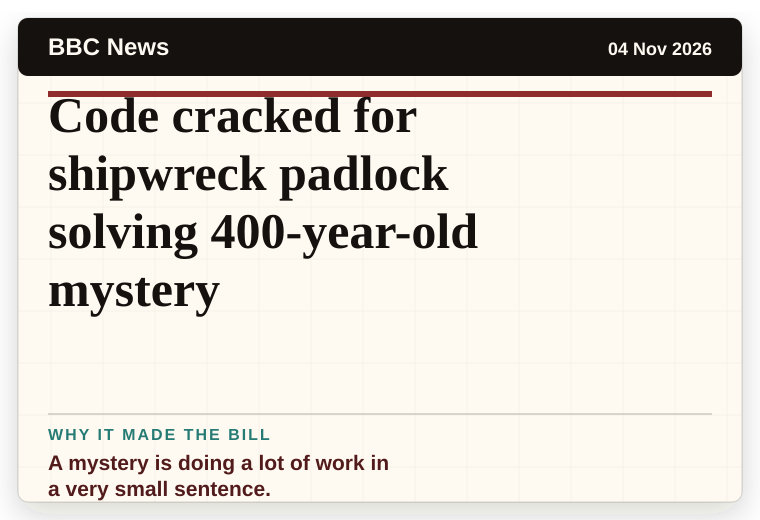
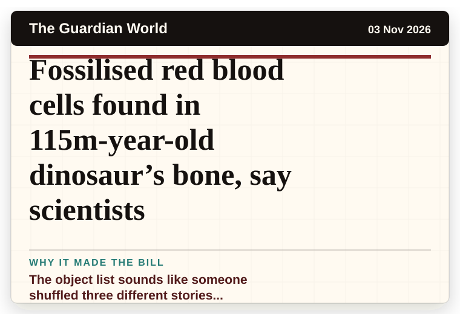
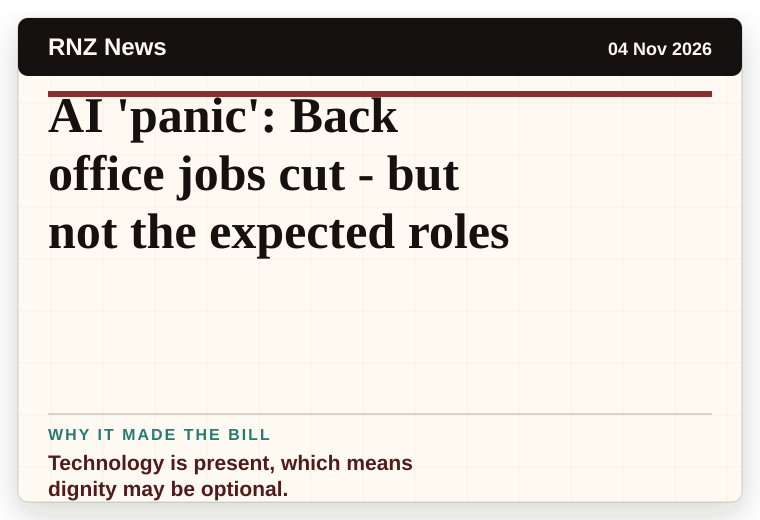
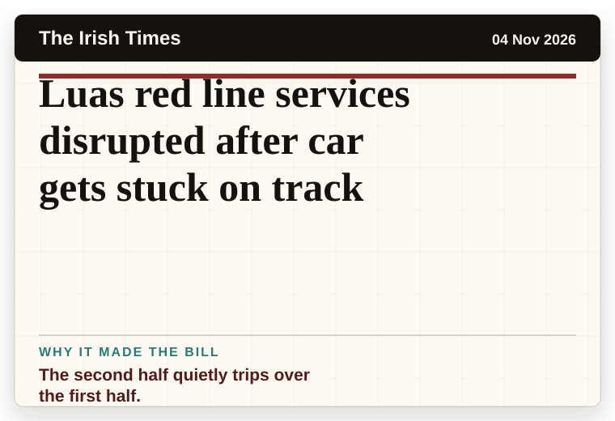
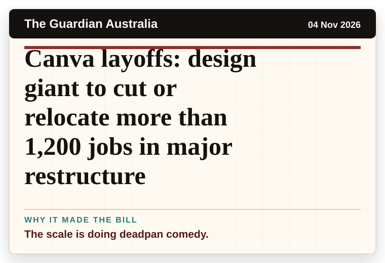
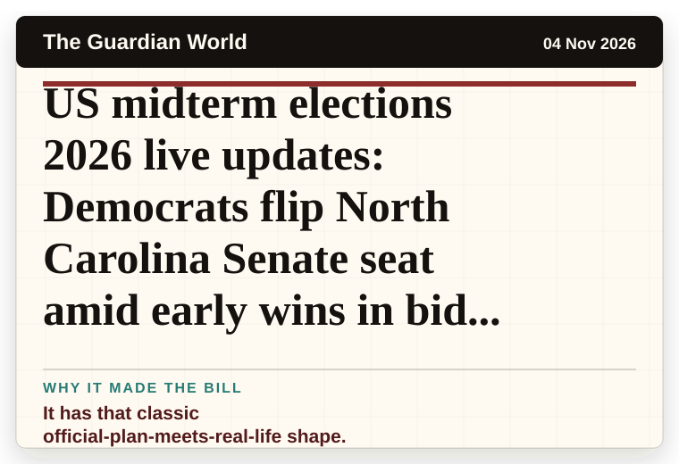
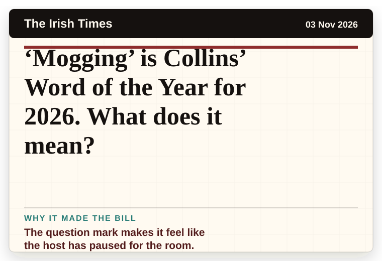

NT News
Australia
Mystery ticket wins $60 million Oz Lotto
A mystery is doing a lot of work in a very small sentence.
The latest daily picks, linked back to the original sources. Search the room, pick a source, or follow a headline out to the full story.
Record updated: 04 Nov 2026, 11:33 AM AEST
Showing 21 headline candidates from the refresh run completed on 04 Nov 2026, 11:33 AM AEST.
A mystery is doing a lot of work in a very small sentence.

It reads like the setup to a very dry question.

A household object has somehow reached the news desk.

A very ordinary object has wandered into serious news.

The headline is already trying not to laugh.

A wonderfully specific detail has taken centre stage.

The second half quietly trips over the first half.

The scale is doing deadpan comedy.

The scale is doing deadpan comedy.

The object list sounds like someone shuffled three different stories together.

The word chaos gives it open-mic energy.

A wonderfully specific detail has taken centre stage.

A wonderfully specific detail has taken centre stage.

The headline is already trying not to laugh.

A mystery is doing a lot of work in a very small sentence.

The object list sounds like someone shuffled three different stories together.

Technology is present, which means dignity may be optional.

The second half quietly trips over the first half.

The scale is doing deadpan comedy.

It has that classic official-plan-meets-real-life shape.

The question mark makes it feel like the host has paused for the room.